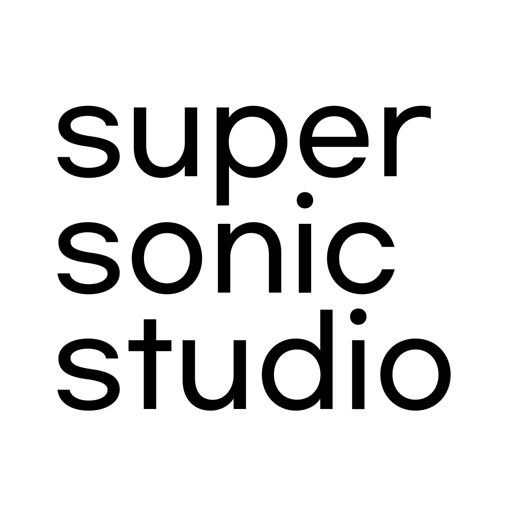
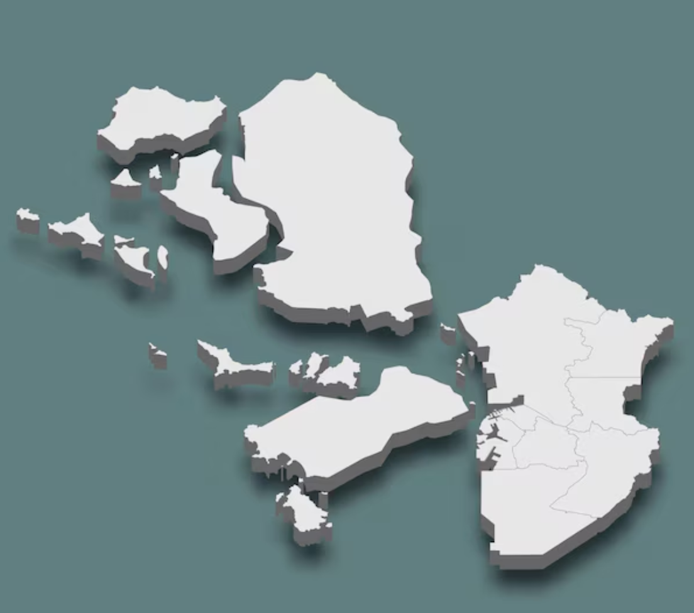

Incheon Local Music Guide
Home
Home
Incheon Local Music Guide.
인천에서 음악을 즐길 수 있는 장소들과, 그 안에서 활동하는 사람들의 이야기를 모았습니다.
아래에서 전체 스팟 지도(네이버 지도 연동)와 인터뷰 전문, 그리고 SUPERSONIC STUDIO의 Editor’s Picks를 확인할 수 있어요.
MAP
Map.
전체 인천 로컬 뮤직 스팟(40+). 네이버 지도 저장 리스트로 연결됩니다.
INTERVIEWS
Interviews.
Zine에는 하이라이트만 수록했습니다. 인터뷰 전문은 아래에서 읽어보세요.


EDITOR’S PICKS
Editor’s Picks.
슈퍼소닉 스튜디오가 직접 큐레이션한 18개의 인천 음악 스팟에 대한 설명을 확인하세요.